Using SimPy to simulate a vaccine clinic - Part 1: an introductory tutorial¶
Discrete event simulation (DES) is a well established technique for building simulation models of systems characterized by:
events that happen at discrete points in time (e.g. the arrival of a patient to the vaccine clinic, the completion of the vaccine injection),
uncertainty in the timing and duration of events (patient show up somewhat randomly even if they have a scheduled appointment, the time to register might depend on various patient characteristics),
entities (e.g. patients) that flow through a system,
contention for resources (patients will wait to at various stages of their vaccine visit to wait for resources such as administrative and clinical staff to become available)
interest in how the system is performing in terms of things like entity delays, resource utilization, or frequency of certain events.
Typical applications include building models of healthcare delivery systems, manufacturing systems, computer networks, call centers and many others. In all of these systems there are entities that flow (patients, widgets, packets, phone calls) and contend for resources for processing (nurses to give vaccines, machines to process, servers to accept packets, agents to answer the phone). By building a representative simulation model, we can study how such systems might perform if we changes some important entity or resource related inputs: patient arrival rate, machine processing rate, number of servers or number of agents answering calls. The applications are endless and it can be a whole lot cheaper to experiment with a computer model than to experiment with the real system.
DES models are “what if?” models that can help in predicting outputs of a system for a given set of input values. They can help statistically characterize the projected performance of the system being modeled. For example, we might simulate different assembly line configurations to get a sense of the throughput differences for different processes. For a call center, DES models could help predict the impact on customer wait time of a 25% increase in call volume.
Ultimately, our goal in this module is to develop a DES model model of a simple vaccine clinic consisting of the following process steps:
Arrival --> Temperature check --> Registration --> Vaccination --> Schedule 2nd dose (if needed) --> Wait 15 minutes --> Exit
Conceptually, our model has the following components:
The entities are patients.
Entities are created by some sort of arrival process.
Each stage of the process has some number of resources associated with it. These resources are the staff that help the patient such as registration clerks and clinicians administrering the vaccine.
Entities flow through different stages of the vaccination process, and at each stage, they:
request one unit of the appropriate type of staff resource and wait if one is not available,
after obtaining a staff resource they delay for some amount of time for the process (e.g. registration, vaccination, scheduling) to be completed,
when the processing time has elapsed, the resource is released and the patient moves on to the next stage of the vaccination process,
When all stages are complete, the patient exits the system.
Our model should handle:
uncertainty in the processing times of the individual steps above,
uncertainty in patient arrival times
finite numbers of different types of resources (staff)
ability to estimate key process metrics such as patient wait times and total time in clinic as well as resource utilization.
Such a model would be quite useful in helping do capacity planning and appointment scheduling for the clinic. We need to decide how many staff are needed at each stage of the clinic visit and how much room we need in the post-vaccination patient observation area.
Let’s start by learning a little about how DES software works, both in general and with respect to SimPy, the Python package we’ll be using.
[3]:
import math
import numpy as np
import pandas as pd
from scipy import optimize
import matplotlib.pyplot as plt
import seaborn as sns
from numpy.random import default_rng
from IPython.display import Image
import simpy
Under the hood with DES software¶
Internally, DES software relies on the notion of a simulation clock and a next event list (the discrete events) to decide which event to process next and when to process it. Between these discrete events, nothing happens to the state of the system - the clock “ticks” from event to event. For example, here’s what the next event list might look like (conceptually) at some time \(t=70.1\) during the simulation.
[4]:
Image("images/next_event_list.png")
[4]:
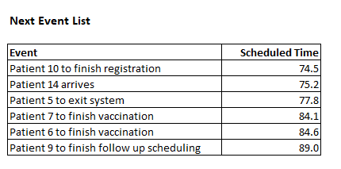
Simulation software such as SimPy does the work of maintaining this list - adding new events, processing the next event, and removing events once they’ve been processed. In many ways, it’s like a job scheduler. When the ongoing event is done with processing, DES software will look at the next event and see that Patient 10 to finish registration will happen at \(t=74.5\). It will:
advance the simulation clock to \(74.5\)
send a signal that this event is occurring
Our program is “listening” or “waiting to be triggered” by this event and the appropriate part of our code will then do whatever we want to do when a patient finishes the registration process. For example, we might:
store the timestamp of when registration was completed for this patient,
have the patient request a nurse to begin the actual vaccination,
if the nurse is available:
generate a random vaccination process time and wait for that time to elapse (a new event gets added to the next event list)
if the nurse is not available:
the DES software manages the internal requests for resources in some sort of queue
The advantage of using DES software such as SimPy is that it does the tedious work of managing the next event list and all the resource queues. Yes, you could write all this code yourself in any general purpose language, but it’s much easier to use a good simulation library like SimPy.
DES software¶
DES has a long history and there are numerous commercial packages for doing this type of simulation. Many of these are quite sophisticated and allow you to build very complex, animated models and include comprehensive statistical monitors and analysis tools. Here’s are two short video clips of such a models built with Simio, a modern DES package. As you can see, you can build simple, abstract models as well as very complex and realistic models.
Other popular GUI based DES tools include Arena, ProModel, AnyLogic, FlexSim, SIMUL8 and many others.
While these tools are quite powerful and the ability to create animated models is quite valuable for both model debugging, model validation and communicating with decision makers, there are some downsides:
Some of these tools are quite expensive ($10K and up … per license),
Can be difficult to share models since expensive, proprietary software is needed,
While GUI tools are nice, sometimes complex logic can’t easily be modeled (to be fair, most of these packages do allow some degree of interacting with programming languages such as C#, VBA, Python, Java and others.)
Another approach is to use an open source library based on a general purpose programming language such as C++, Java, or Python. Of course, quality and availability varies and using them requires programming skills. Things like animation and statistical monitors may or may not be built in. Nevertheless, they are a great way to really learn what simulation modeling is all about. And, don’t let the pretty pictures and videos above fool you, underneath them is a next event list and code and data.
In this tutorial we will learn the basics of using a library called SimPy. It’s been around for a few years but it’s certainly a bit of a bare bones package. But, with a little Python knowledge, real simulation models can be built.
Getting started with SimPy¶
From the SimPy in 10 Minutes tutorial:
SimPy is a discrete-event simulation library. The behavior of active components (like vehicles, customers or messages) is modeled with processes. All processes live in an environment. They interact with the environment and with each other via events.
SimPy makes it easier to build DES models with Python by taking care of things like the simulation clock and the next event list. It provides high level constructs for modeling components of your model as entities, processes and resources.
We are going to build a basic model of a vaccine clinic. It’s a prototypical example in that our model should be able to handle:
a random arrival process,
a multi-stage process in which we have to contend for limited resources at each stage,
there is uncertainty in the processing times,
we are interested in things like the relationship between patient volume, resource utilization and patient waiting.
We want to build a model that will be helpful in deciding how many vaccination stations to have, the hours of operation of the vaccine clinic, and the size of the post-vaccine waiting room needed.
Like the SimPy in 10 Minutes tutorial, I will start with the very basics and keep adding on functionality and complexity. Along the way, I’ll try to give you a bit of sense of how SimPy works. Start by reading the Basic Concepts section of the SimPyin 10 tutorial to start to become familiar with some fundamental SimPy concepts:
we model many components of our simulation with processes,
all of our processes live in a SimPy environment,
the processes interact with each other and the SimPy environent through events.
I encourage you to have a Jupyter notebook open as you are going through the SimPy in 10 Minutes tutorial and build the simple Car Simulation model it uses.
Another really good getting started tutorial¶
I also highly recommend the following tutorial from Real Python. It walks you through building a simulation model a movie theater. It’s very well done and will help you better understand both the big picture of DES modeling and SimPy.
Digging a little deeper into the inner workings of SimPy¶
If interested, see https://simpy.readthedocs.io/en/latest/topical_guides/simpy_basics.html#how-simpy-works for more technical details on how SimPy works.
Prelude: Generators¶
The way that SimPy enables event based modeling is through Python generators. Generators are a special type of function (or method) that acts as an iterator and that remembers its state between calls to it. We also say that generator functions are lazy iterators. They are lazy in the sense that they don’t generate their values until asked to do so. For example, consider using a list comprehension to generate the first 10 perfect squares.
[5]:
squares = [x ** 2 for x in range(1, 11)]
print(squares)
[1, 4, 9, 16, 25, 36, 49, 64, 81, 100]
Now, I’ll replace the brackets in the above list comprehension with parentheses - now it’s something called a generator expression. It creates an iterator (something we can call next on to get the next value in the sequence), but doesn’t actually generate the values until asked.
[6]:
perfect_squares_gen_1 = (x ** 2 for x in range(1, 11))
print(perfect_squares_gen_1)
<generator object <genexpr> at 0x7fd948d67d60>
[7]:
for _ in range(10):
print(next(perfect_squares_gen_1))
1
4
9
16
25
36
49
64
81
100
Wait, what does this have to do with simulation? Let’s back up and reconsider that previous example. What if we wanted a function that could generate an infinite sequence of perfect squares? Obviously, we can’t just generate a list of an infinite number of perfect squares. Generator functions provide a way to do such things, and they do it by remembering their internal state. For example:
[8]:
def perfect_squares_gen_2():
value = 0
while True:
value += 1
yield value ** 2
[9]:
perfect_squares = perfect_squares_gen_2()
print(next(perfect_squares))
print(next(perfect_squares))
print(next(perfect_squares))
1
4
9
The key is noticing the yield keyword. It serves to return a value from our generator function perfect_square_gen (much like a standard return statement) but ALSO remembers the value of value, a local variable in the function. It also, temporarily, passes control back to whomever called. Since it can remember its state, it knows where it left off whenever the function is called again using next. No need to generate new values until asked. You might have realized that
perfect_squares_gen_1 is really just some syntactic sugar for doing what we did in perfect_squares_gen_2.
Now let’s consider something a little more relevant to simulation modeling. We rely on SimPy to provide an manage a simulation clock. Let’s create our own simple clock in Python. However, unlike a normal clock, we tell the clock how large of a “tick” it should make every time we ask it for the time. It should start time time t = 0 and then be incremented by whatever tick size we pass into it.
[10]:
def simple_clock(tick_size):
t = 0
while True:
print(f"The time was {t} and you asked me to tick {tick_size} time units.")
t += tick_size
yield t
[11]:
clock = simple_clock(5)
print(next(clock))
print(next(clock))
print(next(clock))
The time was 0 and you asked me to tick 5 time units.
5
The time was 5 and you asked me to tick 5 time units.
10
The time was 10 and you asked me to tick 5 time units.
15
The big takeaway is that by using yield, we can have a function that kind of goes into “suspended animation” but can pick up where it left off when it’s asked to. In SimPy, we will have process functions that create events and then yield them and wait for the event to be triggered. The most common such event is a Timeout event - it gets triggered when a specified duration of time has passed on the simulation clock. A Timeout event could be used to model something like the time
it takes for a patient to get registered at our clinic. We will also use yield when we need to acquire a resource such as the clinician who will vaccinate the patient. Since we have a finite number of clinicians, the patient may have to wait until one becomes available.
Some additional resources on generators include:
The structure of a SimPy program¶
There are actually several different ways to structure a SimPy simulation model program. You can do things in an object-oriented fashion, or a more procedural way, or a combination of both. Within these choices there are many different ways to go about developing the details of the model. Even though SimPy has been around for several years, best practices for modeling are still evolving. In addition, things that come as standard features in many commercial simulation packages such as statistical monitoring and animation, are the responsibility of the modeler when using SimPy. This can affect how the model is architected.
In this tutorial, I’m going to try to use a pattern that is easily accessible by new Python simulation modelers. It will use a combination of custom classes as well as process functions.
Before launching into building the entire vaccine clinic model, let’s do a few simple warmup models to become more familiar with SimPy.
Model 1: Creating a patient arrival process¶
For our vaccine clinic model, we’ll need a way to generate patient arrivals. To start, let’s just generate a new patient every \(n\) minutes. There are no specific time units specified in SimPy. It’s our job to keep our time units straight and is helpful to think of each unit of time as a minute. It would be nice to know when each patient was created to make sure things are working correctly. SimPy has functions for accessing the state of the simulation clock - the current simulation time is
accessible from the now attribute of the simulation environment object (which by convention we usually name env). We’ll include print statements to help illustrate what is going in inside the function.
[12]:
Image("images/model1.png")
[12]:
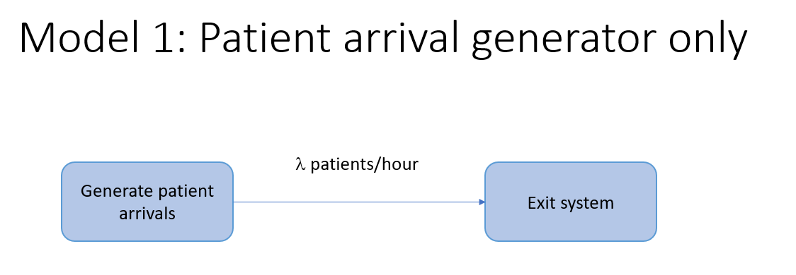
[13]:
def patient_arrivals(env, interarrival_time=5.0):
"""Generate patients according to a fixed time arrival process"""
# Create a counter to keep track of number of patients generated and to serve as unique patient id
patient = 0
# Infinite loop for generating patients
while True:
# Generate next interarrival time (this will be more complicated later)
iat = interarrival_time
# This process will now yield to a 'timeout' event. This process will resume after iat time units.
yield env.timeout(iat)
# Okay, we're back. :) New patient generated = update counter of patients
patient += 1
print(f"Patient {patient} created at time {env.now}")
Now we can create a simple simulation model that just generates patients for some fixed amount of time.
IMPORTANT THING TO NOTE
In the code below, you’ll see the following line:
env1.process(patient_arrivals(env1, interarrival_time))
This is really doing two things:
The
patient_arrivals(env1, interarrival_time)part is calling thepatient_arrivalsgenerator function and gets back a Python generator.The
env1.process()part is then registering this generator with the simulation environment (env1in this example).
In fact, I could have written the above in two lines, one line per step listed above:
arrival_generator = patient_arrivals(env1, interarrival_time)
env1.process(arrival_generator)
For any generator function you write (i.e. any function that contains a yield statement), you MUST register it with the simulation enironment by passing the generator with the process function.
[14]:
# Initialize a simulation environment
env1 = simpy.Environment()
# Create a process generator and start it and add it to the env
# env.process() starts the patient_arrivals process and adds it to the environment
runtime = 25
interarrival_time = 3.0
env1.process(patient_arrivals(env1, interarrival_time))
# Run the simulation
env1.run(until=runtime)
Patient 1 created at time 3.0
Patient 2 created at time 6.0
Patient 3 created at time 9.0
Patient 4 created at time 12.0
Patient 5 created at time 15.0
Patient 6 created at time 18.0
Patient 7 created at time 21.0
Patient 8 created at time 24.0
From a modeling perspective, patients arriving at perfectly equally spaced interarrival times is pretty unrealistic. If we were modeling a “walk-in clinic” in which no patients have scheduled appointments, it would be more appropriate to model patient arrivals by something known as a Poisson arrival process. These processes are characterized by:
a constant mean arrival rate (usually denoted by \(\lambda\)),
the time between individual arrivals is exponentially distributed,
arrivals are independent of each other,
the number of arrivals is any time interval of length \(t\), is Poisson distributed with mean \(\lambda t\).
Poisson process are commonly used to model things like calls to call centers, arrivals of patients to an emergency room, and even things like hurricanes. A really nice basic intro is available in the following blog post:
Since Poisson arrival processes have interarrival times that are exponentially distributed, we need to generate exponential random variates within our patient_arrivals function. For this, we’ll use numpy. Recently, numpy has updated their random variable generation routines - details are at https://numpy.org/doc/stable/reference/random/index.html.
First we need to import the default random number generator and create a random generator variable. I’ll use 4470 as the seed. This generator generates numbers uniformly between 0 and 1, which can be used to generate random variates from whatever distribution we choose. This is kind of like rand() in Excel except that we get to control the generator via a seed value.
[15]:
from numpy.random import default_rng
rg = default_rng(seed=4470)
print(rg.random())
print(rg.random())
0.45855804438027437
0.15021752731855942
In addition to generating random numbers, it’s handy to have a way to compute various quantities of probability distributions. The scipy.stats module contains a large number of probability distributions and each has numerous functions for calculating things such as pdf or CDF values, quantiles, and various moments. You can see the details at https://docs.scipy.org/doc/scipy/reference/stats.html. We’ll use it here to overlay the exponential pdf (probability density function) on our histogram
of generated exponential random variates.
[16]:
# Import exponential distribution function from scipy.stats
from scipy.stats import expon
# Set mean of this distribution to whatever we were using above for interarrival time
mean_interarrival_time = interarrival_time
# Create a random variable object based on the exponential distribution with the given mean
rv_expon = expon(scale=mean_interarrival_time)
[17]:
# Generate 1000 exponential random variates (notice this is the exponential function from numpy)
iat_sample = rg.exponential(mean_interarrival_time, 10000)
# Create a histogram of the random samples with exponential pdf overlaid
plt.title("Interarrival time histogram")
plt.xlabel("Interarrival time")
plt.ylabel("Density")
plt.hist(iat_sample, density=True);
# Create values for the x-axis using expon function from SciPy
x_expon = np.linspace(rv_expon.ppf(0.0001),
rv_expon.ppf(0.999), 500)
# Create values for the y-axis
y_expon_pdf = rv_expon.pdf(x_expon)
plt.plot(x_expon, y_expon_pdf,
'r-', lw=3, alpha=0.6, label='Exponential pdf');
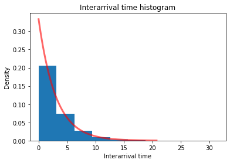
Now, we’ll modify our patient arrivals function to use Poisson arrivals instead of equally-spaced deterministic arrivals.
[18]:
def patient_arrivals_random_1(env, mean_interarrival_time=5.0, rg=default_rng(0)):
"""Generate patients according to a Poisson arrival process"""
# Create a counter to keep track of number of patients generated and to serve as unique patient id
patient = 0
# Infinite loop for generating patients
while True:
# Generate next interarrival time from exponential distribution
iat = rg.exponential(mean_interarrival_time)
# This process will now yield to a 'timeout' event. This process will resume after iat time units.
yield env.timeout(iat)
# Update counter of patients
patient += 1
print(f"Patient {patient} created at time {env.now}")
Now we’ll create a new simulation environment and run this new arrival model. You’ll see that the arrivals are not equally spaced.
[19]:
# Initialize a simulation environment
env2 = simpy.Environment()
# Create a process generator and start it and add it to the env
# env.process() starts and adds it to env
runtime = 25
interarrival_time = 3.0
env2.process(patient_arrivals_random_1(env2, interarrival_time))
# Run the simulation
env2.run(until=runtime)
Patient 1 created at time 2.039795711906729
Patient 2 created at time 5.098587016304323
Patient 3 created at time 5.158007004071489
Patient 4 created at time 5.164814984115174
Patient 5 created at time 6.815843602032318
Patient 6 created at time 11.705664906007474
Patient 7 created at time 13.72641376400917
Patient 8 created at time 15.992317837485343
Patient 9 created at time 24.44267577471252
Model 2: Simplified vaccine clinic with delay processes and one resource¶
Let’s extend the model a bit and create our first simplified vaccine clinic model by adding:
a simple delay process to represent the steps before vaccination - we’ll model this total time in the pre-vaccination stages with another exponential distribution having a mean of 4.25 minutes,
a resource for the vaccination stage,
another delay process to represent the time the patient has to wait after getting the vaccination before exiting (15 mins).
[20]:
Image("images/model2.png")
[20]:
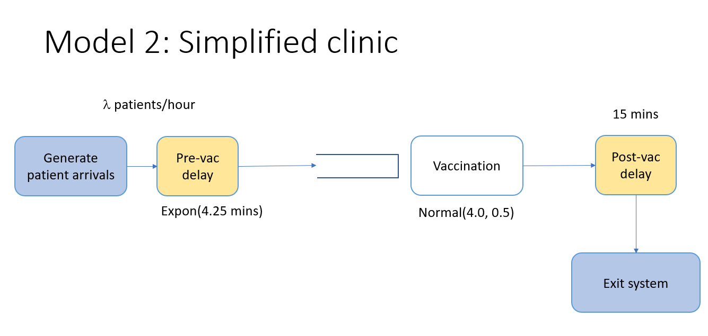
In other words, let’s pretend that after a patient arrives, the patient spends a random amount of time to go through the stages of the vaccination process before the actual vaccination but then must get a vaccinator resource for the vaccination itself. In other words we are grossly oversimplifying the real system by ignoring many of the details of the vaccination process. To do this, we’ll do two main things:
Add a
vaccinatorresourceCreate a new process function for our extended model that incorporates the new delays and resource contention,
Modify the arrival process to create a vaccination event for each patient arrival,
Acquiring and releasing resources¶
For the actual vaccination stage, we’ll use a common code block pattern:
attempt to acquire a certain type of staff resource using a Python context manager,
once we acquire the resource we get vaccinated which takes some amount of time,
we release the resource (actually, the context manager will release it for us).
# Request vaccination staff to get registered
with vaccinator.request() as request:
yield request
yield env.timeout(rg.normal(mean_vac_time, 0.5)
A few important points about the example above:
requestis a type of SimPy event corresponding to our request to get one unit of thevac_staffresource,We
yieldtherequest- in essence, suspending the function until the request can be satistfied,Now we do another
yieldbut this time we are yielding a newprocessevent, thetimeoutfor the vaccination stage,We modeling the vaccination time with a normal distribution with the given mean and standard deviation (hard-coded for now).
By using the
with vaccinator.request() as request:context manager, SimPy knows to automatically release the resource once all the steps within the block are executed.
[21]:
def simplified_vac_process(env, name, mean_prevac_time, mean_vac_time, mean_postvac_time, vaccinator):
"""Process function modeling how a patient flows through system."""
print(f"{name} entering vaccination clinic at {env.now:.4f}")
# Yield for the pre-vac time
yield env.timeout(rg.exponential(mean_prevac_time))
# Request vaccination staff to get vaccinated
with vaccinator.request() as request:
print(f"{name} requested vaccinator at {env.now:.4f}")
yield request
print(f"{name} got vaccinator at {env.now:.4f}")
yield env.timeout(rg.normal(mean_vac_time, 0.5))
# Yield for the post-vac time
yield env.timeout(mean_postvac_time)
# The process is over, we would exit the clinic
print(f"{name} exiting vaccination clinic at {env.now:.4f}")
Now we can modify our arrival function to interact with our new simplified vaccination process function. Notice since simplified_vac_process does a yield (actually, multiple yields) it is a Python generator function and, from SimPy’s perspective, it’s something we need to register as a process. We’ll do this in our new arrivals function.
Also notice how we have to pass a bunch of parameters around between functions. This is ok here since our model is pretty simple and we aren’t passing that many parameters around. However, as our model grows, this will become more and more of an issue. In a subsequent version of the model, we’ll use a different approach to avoid having to do this.
[22]:
def patient_arrivals_random_2(env, mean_interarrival_time, mean_prevac_time, mean_vac_time,
mean_postvac_time, vaccinator, rg=default_rng(0)):
"""Generate patients according to a Poisson arrival process"""
# Create a counter to keep track of number of patients generated and to serve as unique patient id
patient = 0
# Infinite loop for generating patients
while True:
# Generate next interarrival time
iat = rg.exponential(mean_interarrival_time)
# This process will now yield to a 'timeout' event.
# This process will resume after iat time units.
yield env.timeout(iat)
# Update counter of patients
patient += 1
print(f"Patient{patient} created at time {env.now}")
# Create and register the simplifed vaccation process process.
# I'm doing in two steps here, but could combine into one
# Create a new patient delay process generator object.
patient_visit = simplified_vac_process(env, 'Patient{}'.format(patient),
mean_prevac_time, mean_vac_time, mean_postvac_time, vaccinator)
# Register the process with the simulation environment
env.process(patient_visit)
# Here's the one step version
# env.process(simplified_vac_process(env, 'Patient{}'.format(patient),
# mean_prevac_time, mean_vac_time,
# mean_postvac_time, vaccinator))
Ready to create a new simulation environment and run our new model.
[23]:
# Initialize a simulation environment
env3 = simpy.Environment()
# Set input values
mean_interarrival_time = 3.0
mean_prevac_time = 4.25
mean_vac_time = 4.0
mean_postvac_time = 15.0
num_vaccinators = 2
# Create vaccinator resource
vaccinator = simpy.Resource(env3, num_vaccinators)
# Register our new arrivals process
env3.process(patient_arrivals_random_2(env3, mean_interarrival_time, mean_prevac_time, mean_vac_time,
mean_postvac_time, vaccinator))
# Run the simulation
runtime = 50
env3.run(until=runtime)
Patient1 created at time 2.039795711906729
Patient1 entering vaccination clinic at 2.0398
Patient2 created at time 5.098587016304323
Patient2 entering vaccination clinic at 5.0986
Patient3 created at time 5.158007004071489
Patient3 entering vaccination clinic at 5.1580
Patient4 created at time 5.164814984115174
Patient4 entering vaccination clinic at 5.1648
Patient3 requested vaccinator at 6.3824
Patient3 got vaccinator at 6.3824
Patient5 created at time 6.815843602032318
Patient5 entering vaccination clinic at 6.8158
Patient1 requested vaccinator at 6.9140
Patient1 got vaccinator at 6.9140
Patient4 requested vaccinator at 7.7684
Patient4 got vaccinator at 10.4267
Patient5 requested vaccinator at 11.4207
Patient5 got vaccinator at 11.4973
Patient2 requested vaccinator at 11.5083
Patient6 created at time 11.705664906007474
Patient6 entering vaccination clinic at 11.7057
Patient7 created at time 13.72641376400917
Patient7 entering vaccination clinic at 13.7264
Patient2 got vaccinator at 15.1662
Patient7 requested vaccinator at 15.7214
Patient7 got vaccinator at 15.8690
Patient8 created at time 15.992317837485343
Patient8 entering vaccination clinic at 15.9923
Patient6 requested vaccinator at 18.9349
Patient6 got vaccinator at 18.9349
Patient8 requested vaccinator at 19.8985
Patient8 got vaccinator at 20.6928
Patient9 created at time 24.44267577471252
Patient9 entering vaccination clinic at 24.4427
Patient9 requested vaccinator at 24.5909
Patient9 got vaccinator at 24.5909
Patient3 exiting vaccination clinic at 25.4267
Patient1 exiting vaccination clinic at 26.4973
Patient4 exiting vaccination clinic at 30.1662
Patient5 exiting vaccination clinic at 30.8690
Patient2 exiting vaccination clinic at 33.7599
Patient7 exiting vaccination clinic at 35.6928
Patient6 exiting vaccination clinic at 37.4405
Patient8 exiting vaccination clinic at 39.4828
Patient10 created at time 42.61593501604024
Patient10 entering vaccination clinic at 42.6159
Patient9 exiting vaccination clinic at 42.6953
Patient10 requested vaccinator at 45.3688
Patient10 got vaccinator at 45.3688
Now that you’ve got a little better idea of how to go about creating very simple SimPy models, let’s tackle a more complex vaccine clinic model. Again, for our first version, we’ll make a number of simplifying assumptions and simplifying software design decisions. Later versions will be better.
Model 3: The vaccine clinic model - version 0.01¶
Here’s the basic vaccination process we’ll model.
Arrival --> Temperature check --> Registration --> Vaccination --> Schedule dose 2 (if needed) --> Wait 15 min --> Exit
[24]:
Image("images/model3.png")
[24]:
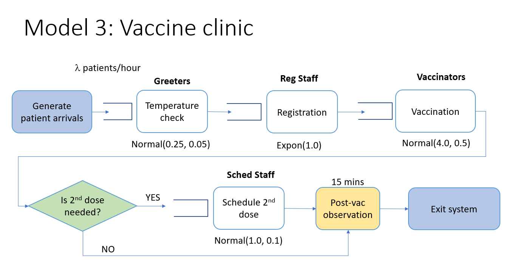
Creating a VaccineClinic class¶
We will model the clinic itself with a Python class. This class will contain attributes such as:
the SimPy environment,
resource capacity related inputs,
data structures to store data collected as patients flow through the system,
the SimPy resources for modeling the various types of staff modeled,
process methods corresponding to processing times in each stage in the clinic patient flow diagram.
By having a VaccineClinic class, it makes it easy to encapsulate a bunch of input parameters, such as the capacity levels of the different staff resources, into an object that we can then pass along to other functions. This basic strategy of creating custom classes for distinct components in your simulation model is often quite useful.
For now, notice that the process methods corresponding to each state of the vaccination process have hard coded parameters in this class. Yes, this is bad. But it’s perfectly fine to make such simplifications while you are learning and trying to get a model working. We’ll improve upon this in a later version.
[25]:
class VaccineClinic(object):
def __init__(self, env, num_greeters, num_reg_staff, num_vaccinators, num_schedulers, rg):
# Simulation environment
self.env = env
self.rg = rg
# Create list to hold timestamps dictionaries (one per patient)
self.timestamps_list = []
# Create lists to hold occupancy tuples (time, occ)
self.postvac_occupancy_list = [(0.0, 0.0)]
self.vac_occupancy_list = [(0.0, 0.0)]
# Create resources
self.greeter = simpy.Resource(env, num_greeters)
self.reg_staff = simpy.Resource(env, num_reg_staff)
self.vaccinator = simpy.Resource(env, num_vaccinators)
self.scheduler = simpy.Resource(env, num_schedulers)
# Create process methods - hard coding processing time distributions for now
# TODO - remove hard coding
# The patient argument is just a unique integer number
def temperature_check(self, patient):
yield self.env.timeout(self.rg.normal(0.25, 0.05))
def registration(self, patient):
yield self.env.timeout(self.rg.exponential(1.0))
def vaccinate(self, patient):
yield self.env.timeout(self.rg.normal(4.0, 0.5))
def schedule_dose_2(self, patient):
yield self.env.timeout(self.rg.normal(1.0, 0.25))
# We assume all patients wait at least 15 minutes post-vaccination
# Some will choose to wait longer. This is the time beyond 15 minutes
# that patients wait.
def wait_gt_15(self, patient):
yield self.env.timeout(self.rg.exponential(0.5))
The get_vaccinated function¶
Now we’ll create a general get_vaccinated function to define the sequence of steps traversed by patients. We’ll also capture a bunch of timestamps to make it easy to compute various system performance measures such as patient waiting times, queue sizes and resource utilization. The inputs to this function include:
the simulation environment,
a patient id,
the clinic object (created from
VaccineClinicclass),the percentage of patients that are there for their first dose,
the random number generator.
Acquiring and releasing resources¶
For each step in the vaccination process, you’ll find a sequence of code blocks in which we:
attempt to acquire a certain type of staff resource,
once we acquire the resource we get processed by calling the appropriate method of the
VaccineClinicobject,we release the resource.
# Request reg staff to get registered
with clinic.reg_staff.request() as request:
yield request
got_reg_ts = env.now
yield env.process(clinic.registration(patient, rg))
release_reg_ts = env.now
A few important points about the example above:
requestis a type of SimPy event corresponding to our request to get one unit of thereg_staffresource,We
yieldtherequest- in essence, suspending the function until the request can be satistfied,once the request is satisfied, the next line,
got_reg_ts = env.nowgets executed and we get the current simulation time and store it in a local variable,got_reg_ts(later in the code we’ll put this variable value into a dictionary that we persists throughout the entire simulation)Now we do another
yieldbut this time we are yielding a newprocessevent, the actualregistration(generator) function, which is part of theclinicobject.When the patient is done with the registration process, the next line,
release_reg_ts = env.now, captures the registration finish time.
We’ll use this same code pattern throughout the get_vaccinated function as we move through the different stages of the vaccination process.
Patient flow timestamps¶
You just saw that we create numerous timestamp variables corresponding to things like when a patient starts and ends various stages of the vaccination process. For example:
got_greeter_ts = env.now
Our goal is to be able to compute important durations such as how long each patient waited before starting vaccination or before registration. As long as we gather the necessary timestamps, we can compute an durations we want. At the end of the function you’ll see that all of the timestamps are gathered up into a dictionary along with the patient id number and the dictionary stored in timestamps_list, an attribute of the clinic object.
When the simulation is done, we can convert this list of dictionaries into a pandas dataframe, compute the important time durations for each patient and then do summary stats and plots on these new fields.
Logging occupancy changes¶
We are also interested in the number of patients present in the vaccination stage and the number in the post-vaccination observation stage. Unfortunately, SimPy no longer has built in monitor classes to track these things. So, we’ll do it ourselves. In order to correctly compute time averaged occupancy statistics, we just need to log the time and occupancy level each time it changes. For example, when a patient acquires a staff member to administer the vaccination, the occupancy in the vaccination stage increases by 1. When the vaccination is complete and the patient releases the resource, the occupancy decreases by 1.
If you look back at the VaccineClinic class definition, you’ll see the initialization for the occupancy lists that we’ll updating.
self.vac_occupancy_list = [(0.0, 0.0)]
The vac_occupancy_list attribute is a list of tuples - (timestamp, occupancy). When the simulation begins, at time 0, there are 0 patients in the vaccination stage. Let’s say that at time 4.5, the first patient starts the vaccination step and the second patient starts at 4.7. Here’s how our vac_occupancy_list is changing
# At time 4.5
self.vac_occupancy_list = [(0.0, 0.0), (4.5, 1)]
# At time 4.7
self.vac_occupancy_list = [(0.0, 0.0), (4.5, 1), (4.7, 2)]
Now assume that one of the patients is done with the vaccination step at time 12.6.
# At time 12.6
self.vac_occupancy_list = [(0.0, 0.0), (4.5, 1), (4.7, 2), (12.6, 1)]
When the simulation is done, we’ll convert the lists of tuples into a pandas dataframe and then do the appropriate statistical analysis to compute things like the mean and 95th percentile of occupancy in these two areas. Such statistics are useful for capacity planning.
[26]:
def get_vaccinated(env, patient, clinic, pct_first_dose, rg):
# Patient arrives to clinic - note the arrival time
arrival_ts = env.now
# Request a greeter for temperature check
# By using request() in a context manager, we'll automatically release the resource when done
with clinic.greeter.request() as request:
yield request
# Now that we have a greeter, check temperature. Note time.
got_greeter_ts = env.now
yield env.process(clinic.temperature_check(patient))
release_greeter_ts = env.now
# Request reg staff to get registered
with clinic.reg_staff.request() as request:
yield request
got_reg_ts = env.now
yield env.process(clinic.registration(patient))
release_reg_ts = env.now
# Request clinical staff to get vaccinated
with clinic.vaccinator.request() as request:
yield request
got_vaccinator_ts = env.now
# Update vac occupancy - increment by 1
prev_occ = clinic.vac_occupancy_list[-1][1]
new_occ = (env.now, prev_occ + 1)
clinic.vac_occupancy_list.append(new_occ)
yield env.process(clinic.vaccinate(patient))
release_vaccinator_ts = env.now
# Update vac occupancy - decrement by 1 - more compact code
# Note that clinic.vac_occupancy_list[-1] is the last tuple in the list
# and that clinic.vac_occupancy_list[-1][1] is referencing the occupancy
# value in the tuple (remember tuple elements are indexed starting with 0, so
# the timestamp is at [0] and the occupancy is at [1]).
# BTW, this suggests that perhaps using something known as "namedtuples" might
# make our code more readable. See https://realpython.com/python-namedtuple/
# for a good introduction to namedtuples.
clinic.vac_occupancy_list.append((env.now, clinic.vac_occupancy_list[-1][1] - 1))
# Update postvac occupancy - increment by 1
clinic.postvac_occupancy_list.append((env.now, clinic.postvac_occupancy_list[-1][1] + 1))
# Request scheduler to schedule second dose if needed
if rg.random() < pct_first_dose:
with clinic.scheduler.request() as request:
yield request
got_scheduler_ts = env.now
yield env.process(clinic.schedule_dose_2(patient))
release_scheduler_ts = env.now
else:
got_scheduler_ts = pd.NA
release_scheduler_ts = pd.NA
# Wait at least 15 minutes from time we finished getting vaccinated
post_vac_time = env.now - release_vaccinator_ts
if post_vac_time < 15:
# Wait until 15 total minutes post vac
yield env.timeout(15 - post_vac_time)
# Wait random amount beyond 15 minutes
yield env.process(clinic.wait_gt_15(patient))
exit_system_ts = env.now
# Update postvac occupancy - decrement by 1
clinic.postvac_occupancy_list.append((env.now, clinic.postvac_occupancy_list[-1][1] - 1))
exit_system_ts = env.now
#print(f"Patient {patient} exited at time {env.now}")
# Create dictionary of timestamps
timestamps = {'patient_id': patient,
'arrival_ts': arrival_ts,
'got_greeter_ts': got_greeter_ts,
'release_greeter_ts': release_greeter_ts,
'got_reg_ts': got_reg_ts,
'release_reg_ts': release_reg_ts,
'got_vaccinator_ts': got_vaccinator_ts,
'release_vaccinator_ts': release_vaccinator_ts,
'got_scheduler_ts': got_scheduler_ts,
'release_scheduler_ts': release_scheduler_ts,
'exit_system_ts': exit_system_ts}
clinic.timestamps_list.append(timestamps)
The run_clinic function¶
Now we’ll create a function that runs the clinic for a specified number of hours. The inputs to this function include:
the simulation environment,
the clinic object,
the mean patient interarrival time,
the percentage of patients that are there for their first dose,
the random number generator,
stopping conditions for the simulation through either a stop time and a maximum number of patient arrivals.
Again, notice that since this function contains a yield statement, it is a generator and will need to be registered with the simulation environment (which we’ll do from our main calling program).
[27]:
def run_clinic(env, clinic, mean_interarrival_time, pct_first_dose, rg,
stoptime=simpy.core.Infinity, max_arrivals=simpy.core.Infinity):
# Create a counter to keep track of number of patients generated and to serve as unique patient id
patient = 0
# Loop for generating patients
while env.now < stoptime and patient < max_arrivals:
# Generate next interarrival time (this will be more complicated later)
iat = rg.exponential(mean_interarrival_time)
# This process will now yield to a 'timeout' event.
# This process will resume after iat time units.
yield env.timeout(iat)
# New patient generated = update counter of patients
patient += 1
#print(f"Patient {patient} created at time {env.now}")
env.process(get_vaccinated(env, patient, clinic, pct_first_dose, rg))
Finally, we will create a main function that will serve as the entry point to using the simulation. For now, just think of it as the first function we’ll call to launch the simulation. Later we’ll see how we can use this function from a command line interface (CLI) to our simulation model. We will run the simulation for 600 minutes.
[28]:
def main():
# For now we are hard coding the patient arrival rate (patients per hour)
patients_per_hour = 180
mean_interarrival_time = 1.0 / (patients_per_hour / 60.0)
pct_first_dose = 0.50
# Create a random number generator
rg = default_rng(seed=4470)
# For now we are going to hard code in the resource capacity levels
num_greeters = 2
num_reg_staff = 2
num_vaccinators = 12
num_schedulers = 2
# Hours of operation
stoptime = 600 # No more arrivals after this time
# Create a simulation environment
env = simpy.Environment()
# Create a clinic to simulate
clinic = VaccineClinic(env, num_greeters, num_reg_staff, num_vaccinators, num_schedulers, rg)
# Register the run_clinic (generator) function
env.process(run_clinic(env, clinic, mean_interarrival_time, pct_first_dose, rg, stoptime=stoptime))
# Actually run the simulation
env.run()
# The simulation is over now, let's create the output csv files from
# the dataframes created by running the simulation model.
# Output log files
clinic_patient_log_df = pd.DataFrame(clinic.timestamps_list)
clinic_patient_log_df.to_csv('./output/clinic_patient_log_df.csv', index=False)
vac_occupancy_df = pd.DataFrame(clinic.vac_occupancy_list, columns=['ts', 'occ'])
vac_occupancy_df.to_csv('./output/vac_occupancy_df.csv', index=False)
postvac_occupancy_df = pd.DataFrame(clinic.postvac_occupancy_list, columns=['ts', 'occ'])
postvac_occupancy_df.to_csv('./output/postvac_occupancy_df.csv', index=False)
# Note simulation end time
end_time = env.now
print(f"Simulation ended at time {end_time}")
return (end_time)
Alright, let’s run this thing!
[29]:
clinic_end_time = main()
Simulation ended at time 875.4387606496971
Oh, oh. The clinic ran several hours past it’s intended ending time of 10 hours (600 minutes). Let’s dig into the output files and figure out how to make this clinic run better.
Post-processing the timestamps file¶
Our simulation model captured numerous timestamps for each patient as they went through the vaccination process. The timestamps were written to a log file with one row per patient. Now we can compute various wait times and service times for each patient and then summarize them for the clinic.
[30]:
clinic_patient_log_df = pd.read_csv('./output/clinic_patient_log_df.csv')
clinic_patient_log_df.info()
<class 'pandas.core.frame.DataFrame'>
RangeIndex: 1795 entries, 0 to 1794
Data columns (total 11 columns):
# Column Non-Null Count Dtype
--- ------ -------------- -----
0 patient_id 1795 non-null int64
1 arrival_ts 1795 non-null float64
2 got_greeter_ts 1795 non-null float64
3 release_greeter_ts 1795 non-null float64
4 got_reg_ts 1795 non-null float64
5 release_reg_ts 1795 non-null float64
6 got_vaccinator_ts 1795 non-null float64
7 release_vaccinator_ts 1795 non-null float64
8 got_scheduler_ts 871 non-null float64
9 release_scheduler_ts 871 non-null float64
10 exit_system_ts 1795 non-null float64
dtypes: float64(10), int64(1)
memory usage: 154.4 KB
[31]:
clinic_patient_log_df.head()
[31]:
| patient_id | arrival_ts | got_greeter_ts | release_greeter_ts | got_reg_ts | release_reg_ts | got_vaccinator_ts | release_vaccinator_ts | got_scheduler_ts | release_scheduler_ts | exit_system_ts | |
|---|---|---|---|---|---|---|---|---|---|---|---|
| 0 | 4 | 0.717711 | 0.717711 | 0.939134 | 1.734766 | 2.294436 | 2.294436 | 5.698411 | 5.698411 | 6.549541 | 21.053885 |
| 1 | 6 | 1.399215 | 1.399215 | 1.622652 | 2.294436 | 2.362507 | 2.362507 | 6.046302 | 6.046302 | 7.341951 | 21.057118 |
| 2 | 2 | 0.288373 | 0.288373 | 0.565944 | 0.565944 | 1.484153 | 1.484153 | 6.052770 | 6.549541 | 7.418184 | 21.214928 |
| 3 | 3 | 0.410287 | 0.434629 | 0.763368 | 1.484153 | 1.734766 | 1.734766 | 6.379838 | 7.418184 | 8.711152 | 22.012266 |
| 4 | 1 | 0.259164 | 0.259164 | 0.434629 | 0.434629 | 1.910158 | 1.910158 | 6.357624 | 7.341951 | 8.590679 | 22.014115 |
From these timestamps, it’s easy to compute any duration of interest as the difference between two timestampls. For example, the total time in the system is just the exit_system_ts minus the arrival_ts.
[32]:
def compute_durations(timestamp_df):
timestamp_df['wait_for_greeter'] = timestamp_df.loc[:, 'got_greeter_ts'] - timestamp_df.loc[:, 'arrival_ts']
timestamp_df['wait_for_reg'] = timestamp_df.loc[:, 'got_reg_ts'] - timestamp_df.loc[:, 'release_greeter_ts']
timestamp_df['wait_for_vaccinator'] = timestamp_df.loc[:, 'got_vaccinator_ts'] - timestamp_df.loc[:, 'release_reg_ts']
timestamp_df['vaccination_time'] = timestamp_df.loc[:, 'release_vaccinator_ts'] - timestamp_df.loc[:, 'got_vaccinator_ts']
timestamp_df['wait_for_scheduler'] = timestamp_df.loc[:, 'got_scheduler_ts'] - timestamp_df.loc[:, 'release_vaccinator_ts']
timestamp_df['post_vacc_time'] = timestamp_df.loc[:, 'exit_system_ts'] - timestamp_df.loc[:, 'release_vaccinator_ts']
timestamp_df['time_in_system'] = timestamp_df.loc[:, 'exit_system_ts'] - timestamp_df.loc[:, 'arrival_ts']
return timestamp_df
[33]:
clinic_patient_log_df = compute_durations(clinic_patient_log_df)
clinic_patient_log_df
[33]:
| patient_id | arrival_ts | got_greeter_ts | release_greeter_ts | got_reg_ts | release_reg_ts | got_vaccinator_ts | release_vaccinator_ts | got_scheduler_ts | release_scheduler_ts | exit_system_ts | wait_for_greeter | wait_for_reg | wait_for_vaccinator | vaccination_time | wait_for_scheduler | post_vacc_time | time_in_system | |
|---|---|---|---|---|---|---|---|---|---|---|---|---|---|---|---|---|---|---|
| 0 | 4 | 0.717711 | 0.717711 | 0.939134 | 1.734766 | 2.294436 | 2.294436 | 5.698411 | 5.698411 | 6.549541 | 21.053885 | 0.000000 | 0.795632 | 0.0 | 3.403975 | 0.000000 | 15.355474 | 20.336174 |
| 1 | 6 | 1.399215 | 1.399215 | 1.622652 | 2.294436 | 2.362507 | 2.362507 | 6.046302 | 6.046302 | 7.341951 | 21.057118 | 0.000000 | 0.671784 | 0.0 | 3.683794 | 0.000000 | 15.010816 | 19.657903 |
| 2 | 2 | 0.288373 | 0.288373 | 0.565944 | 0.565944 | 1.484153 | 1.484153 | 6.052770 | 6.549541 | 7.418184 | 21.214928 | 0.000000 | 0.000000 | 0.0 | 4.568617 | 0.496770 | 15.162158 | 20.926556 |
| 3 | 3 | 0.410287 | 0.434629 | 0.763368 | 1.484153 | 1.734766 | 1.734766 | 6.379838 | 7.418184 | 8.711152 | 22.012266 | 0.024342 | 0.720784 | 0.0 | 4.645072 | 1.038346 | 15.632428 | 21.601979 |
| 4 | 1 | 0.259164 | 0.259164 | 0.434629 | 0.434629 | 1.910158 | 1.910158 | 6.357624 | 7.341951 | 8.590679 | 22.014115 | 0.000000 | 0.000000 | 0.0 | 4.447467 | 0.984327 | 15.656491 | 21.754951 |
| ... | ... | ... | ... | ... | ... | ... | ... | ... | ... | ... | ... | ... | ... | ... | ... | ... | ... | ... |
| 1790 | 1794 | 599.571397 | 599.621665 | 599.890359 | 853.968054 | 854.210189 | 854.210189 | 858.397241 | 858.397241 | 859.260572 | 873.405911 | 0.050268 | 254.077695 | 0.0 | 4.187052 | 0.000000 | 15.008670 | 273.834514 |
| 1791 | 1788 | 597.674139 | 597.674139 | 597.837394 | 850.057965 | 853.043204 | 853.043204 | 856.690619 | NaN | NaN | 874.055316 | 0.000000 | 252.220571 | 0.0 | 3.647416 | NaN | 17.364696 | 276.381177 |
| 1792 | 1792 | 599.352287 | 599.352287 | 599.621665 | 853.349500 | 853.968054 | 853.968054 | 857.884302 | 857.884302 | 859.154074 | 874.864149 | 0.000000 | 253.727834 | 0.0 | 3.916247 | 0.000000 | 16.979847 | 275.511863 |
| 1793 | 1793 | 599.413497 | 599.514806 | 599.682196 | 853.753272 | 854.661368 | 854.661368 | 859.245274 | NaN | NaN | 874.877901 | 0.101309 | 254.071076 | 0.0 | 4.583905 | NaN | 15.632628 | 275.464405 |
| 1794 | 1795 | 600.156662 | 600.156662 | 600.291826 | 854.210189 | 855.706348 | 855.706348 | 860.377132 | 860.377132 | 861.411327 | 875.438761 | 0.000000 | 253.918363 | 0.0 | 4.670784 | 0.000000 | 15.061629 | 275.282099 |
1795 rows × 18 columns
Histgram of total time in system¶
[34]:
plt.hist(clinic_patient_log_df['time_in_system']);
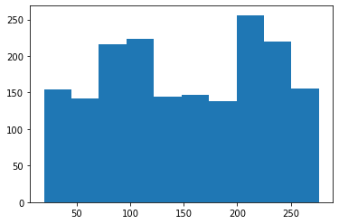
Wow, some patients are spending close to five hours in the clinic!
Key summary stats¶
Let’s look at the wait times for each stage of the process.
[35]:
clinic_patient_log_df.loc[:, ['wait_for_greeter', 'wait_for_reg',
'wait_for_scheduler', 'wait_for_vaccinator', 'time_in_system']].describe()
[35]:
| wait_for_greeter | wait_for_reg | wait_for_scheduler | wait_for_vaccinator | time_in_system | |
|---|---|---|---|---|---|
| count | 1795.000000 | 1795.000000 | 871.000000 | 1795.000000 | 1795.000000 |
| mean | 0.025998 | 129.663089 | 0.179059 | 0.147750 | 150.574948 |
| std | 0.066186 | 72.980450 | 0.340598 | 0.423286 | 73.001200 |
| min | 0.000000 | 0.000000 | 0.000000 | 0.000000 | 19.277677 |
| 25% | 0.000000 | 63.018129 | 0.000000 | 0.000000 | 83.709162 |
| 50% | 0.000000 | 128.710459 | 0.000000 | 0.000000 | 149.288585 |
| 75% | 0.000000 | 196.835437 | 0.227505 | 0.000000 | 217.463601 |
| max | 0.448619 | 254.077695 | 2.002851 | 3.424977 | 276.381177 |
Looks like registration is definitely a bottleneck. We should try increasing the number of registration staff and rerunning the model. Of course, the bottleneck can move, but we can keep repeating this process and come up with a workable capacity plan. We’ll do this with a later version of the model that’s implemented as a Python script. It will be much more convenient to try out different scenarios in that way.
For now, let’s just copy our main function and increase the capacity levels quite high (to basically eliminate waiting).
[36]:
def main():
# For now we are hard coding the patient arrival rate (patients per hour)
patients_per_hour = 180
mean_interarrival_time = 1.0 / (patients_per_hour / 60.0)
pct_first_dose = 0.50
# Create a random number generator
rg = default_rng(seed=4470)
# For now we are going to hard code in the resource capacity levels
#
num_greeters = 5
num_reg_staff = 5
num_vaccinators = 15
num_schedulers = 5
# Hours of operation
stoptime = 600 # No more arrivals after this time
# Create a simulation environment
env = simpy.Environment()
# Create a clinic to simulate
clinic = VaccineClinic(env, num_greeters, num_reg_staff, num_vaccinators, num_schedulers, rg)
# Register the run_clinic (generator) function
env.process(run_clinic(env, clinic, mean_interarrival_time, pct_first_dose, rg, stoptime=stoptime))
# Actually run the simulation
env.run()
# The simulation is over now, let's create the output csv files from
# the dataframes created by running the simulation model.
# Output log files
clinic_patient_log_df = pd.DataFrame(clinic.timestamps_list)
clinic_patient_log_df.to_csv('./output/clinic_patient_log_df.csv', index=False)
vac_occupancy_df = pd.DataFrame(clinic.vac_occupancy_list, columns=['ts', 'occ'])
vac_occupancy_df.to_csv('./output/vac_occupancy_df.csv', index=False)
postvac_occupancy_df = pd.DataFrame(clinic.postvac_occupancy_list, columns=['ts', 'occ'])
postvac_occupancy_df.to_csv('./output/postvac_occupancy_df.csv', index=False)
# Note simulation end time
end_time = env.now
print(f"Simulation ended at time {end_time}")
return (end_time)
[37]:
clinic_end_time = main()
Simulation ended at time 623.0704926354564
[38]:
clinic_patient_log_df = pd.read_csv('./output/clinic_patient_log_df.csv')
clinic_patient_log_df = compute_durations(clinic_patient_log_df)
clinic_patient_log_df.loc[:, ['wait_for_greeter', 'wait_for_reg',
'wait_for_scheduler', 'wait_for_vaccinator', 'time_in_system']].describe()
[38]:
| wait_for_greeter | wait_for_reg | wait_for_scheduler | wait_for_vaccinator | time_in_system | |
|---|---|---|---|---|---|
| count | 1778.0 | 1778.000000 | 922.000000 | 1778.000000 | 1778.000000 |
| mean | 0.0 | 0.130708 | 0.002411 | 0.176267 | 21.039143 |
| std | 0.0 | 0.384609 | 0.025451 | 0.409269 | 1.312444 |
| min | 0.0 | 0.000000 | 0.000000 | 0.000000 | 17.475336 |
| 25% | 0.0 | 0.000000 | 0.000000 | 0.000000 | 20.126669 |
| 50% | 0.0 | 0.000000 | 0.000000 | 0.000000 | 20.825312 |
| 75% | 0.0 | 0.000000 | 0.000000 | 0.000929 | 21.754690 |
| max | 0.0 | 3.593090 | 0.400001 | 2.650919 | 29.633032 |
The time dependent nature of our metrics¶
Since each day the clinic starts out empty and then ends ten hours later, the wait times may depend on time of day. Of course there is also likely to be much variability just do to the inherent randomness of the system. Let’s plot a rolling mean for time in system.
[39]:
y = clinic_patient_log_df['time_in_system'].rolling(100, 10).mean()
plt.plot(y)
[39]:
[<matplotlib.lines.Line2D at 0x7fd946a37f70>]
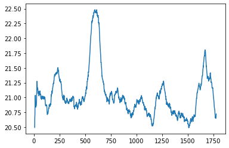
Occupancy statistics¶
In addition to patient level metrics, we are interested in clinic level metrics such as the number of patients in each stage as this will impact space requirements. During the simulation, we collected occupancy data every time a patient entered or exited a stage. So, we need to do time weighted statistics.
[40]:
postvac_occupancy_df = pd.read_csv('./output/postvac_occupancy_df.csv')
vac_occupancy_df = pd.read_csv('./output/vac_occupancy_df.csv')
postvac_occupancy_df.info()
<class 'pandas.core.frame.DataFrame'>
RangeIndex: 3557 entries, 0 to 3556
Data columns (total 2 columns):
# Column Non-Null Count Dtype
--- ------ -------------- -----
0 ts 3557 non-null float64
1 occ 3557 non-null float64
dtypes: float64(2)
memory usage: 55.7 KB
[41]:
postvac_occupancy_df.iloc[250:275,]
[41]:
| ts | occ | |
|---|---|---|
| 250 | 61.144806 | 40.0 |
| 251 | 61.351138 | 41.0 |
| 252 | 61.384551 | 40.0 |
| 253 | 61.485180 | 39.0 |
| 254 | 61.553590 | 40.0 |
| 255 | 61.640973 | 39.0 |
| 256 | 61.691657 | 40.0 |
| 257 | 61.754711 | 39.0 |
| 258 | 61.845740 | 40.0 |
| 259 | 62.015444 | 39.0 |
| 260 | 62.233272 | 40.0 |
| 261 | 62.269452 | 41.0 |
| 262 | 62.347688 | 42.0 |
| 263 | 62.601885 | 43.0 |
| 264 | 62.689000 | 44.0 |
| 265 | 62.967851 | 45.0 |
| 266 | 63.246709 | 44.0 |
| 267 | 63.927832 | 45.0 |
| 268 | 63.944471 | 46.0 |
| 269 | 63.976801 | 45.0 |
| 270 | 64.074766 | 46.0 |
| 271 | 64.386521 | 45.0 |
| 272 | 64.415047 | 46.0 |
| 273 | 65.084974 | 47.0 |
| 274 | 65.257475 | 48.0 |
In order to make it easier to compute time averaged statistics, we will compute the amount of time between occupancy changes. These time durations will act as weights for computing time averaged statistics such as average occupancy. You cannot just do a simple average.
[42]:
# Compute difference between ts[i] i and ts[i + 1]
# (in pandas this corresponds to periods=-1 in diff() function)
postvac_occupancy_df['occ_weight'] = -1 * postvac_occupancy_df['ts'].diff(periods=-1)
vac_occupancy_df['occ_weight'] = -1 * postvac_occupancy_df['ts'].diff(periods=-1)
# Need last occ_weight to compute weight for last row
last_weight = clinic_end_time - postvac_occupancy_df.iloc[-1, 0]
postvac_occupancy_df.fillna(last_weight, inplace=True)
last_weight = clinic_end_time - vac_occupancy_df.iloc[-1, 0]
vac_occupancy_df.fillna(last_weight, inplace=True)
[43]:
np.average(a=postvac_occupancy_df['occ'], weights=postvac_occupancy_df['occ_weight'])
[43]:
44.22093585099425
To make these ideas more concrete, just look at a few rows of the occupancy dataframe.
[44]:
postvac_occupancy_df
[44]:
| ts | occ | occ_weight | |
|---|---|---|---|
| 0 | 0.000000 | 0.0 | 4.780552 |
| 1 | 4.780552 | 1.0 | 0.177135 |
| 2 | 4.957687 | 2.0 | 0.232196 |
| 3 | 5.189882 | 3.0 | 0.179204 |
| 4 | 5.369087 | 4.0 | 0.436598 |
| ... | ... | ... | ... |
| 3552 | 619.324951 | 4.0 | 0.462171 |
| 3553 | 619.787122 | 3.0 | 1.081432 |
| 3554 | 620.868554 | 2.0 | 1.182041 |
| 3555 | 622.050595 | 1.0 | 1.019898 |
| 3556 | 623.070493 | 0.0 | 0.000000 |
3557 rows × 3 columns
Let’s plot the occupancy over time in the post-vaccination stage. The first plot is the entire day and the second just focuses on a small time slice so that we can see that these are discrete integer changes in occupancy.
[45]:
plt.step(postvac_occupancy_df['ts'], postvac_occupancy_df['occ'])
[45]:
[<matplotlib.lines.Line2D at 0x7fd9469ef8b0>]
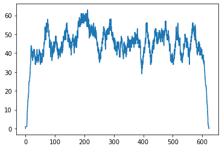
[46]:
plt.step(postvac_occupancy_df['ts'], postvac_occupancy_df['occ'])
plt.xlim(20, 24)
plt.ylim(20, 55)
plt.show();
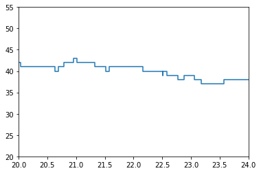
Now let’s plot occupancy in the vaccination stage. Why does it look so different?
[47]:
plt.step(vac_occupancy_df['ts'], vac_occupancy_df['occ'])
[47]:
[<matplotlib.lines.Line2D at 0x7fd946842ca0>]
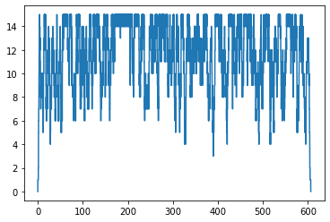
For capacitated resources, we are often interested in utilization. This is just the ratio of total occupancy to available capacity.
[48]:
num_vaccinators = 15
available_capacity = clinic_end_time * num_vaccinators
available_capacity
[48]:
9346.057389531847
[49]:
used_capacity = clinic_patient_log_df['vaccination_time'].sum()
vaccinator_utilization = used_capacity / available_capacity
print(f"Vaccinator utilization: {vaccinator_utilization:0.3f}")
Vaccinator utilization: 0.760
To do things like weighted standard deviations or weighted quantiles, we can use the statsmodels package.
https://www.statsmodels.org/stable/generated/statsmodels.stats.weightstats.DescrStatsW.html
[50]:
from statsmodels.stats.weightstats import DescrStatsW
[51]:
# Create a weighted stats object
weighted_stats = DescrStatsW(postvac_occupancy_df['occ'], weights=postvac_occupancy_df['occ_weight'], ddof=0)
[52]:
weighted_stats.mean
[52]:
44.22093585099425
[53]:
weighted_stats.std
[53]:
9.395653520835333
[54]:
weighted_stats.quantile([0, 0.01, 0.05, 0.25, 0.50, 0.75, 0.95, 0.99])
[54]:
p
0.00 0.0
0.01 2.0
0.05 30.0
0.25 41.0
0.50 45.0
0.75 50.0
0.95 56.0
0.99 59.0
dtype: float64
If we want to minimize the “startup effect”, we might throw out data for the first 100 patients.
[55]:
# Create a weighted stats object after throwing out first 100 points
weighted_stats_gt100 = DescrStatsW(postvac_occupancy_df.iloc[100:, 1], weights=postvac_occupancy_df.iloc[100:, 2], ddof=0)
print(weighted_stats_gt100.mean)
print(weighted_stats_gt100.std)
occ_quantiles = weighted_stats_gt100.quantile([0, 0.01, 0.05, 0.25, 0.50, 0.75, 0.95, 0.99])
print(occ_quantiles)
45.22863098073956
7.772643383018959
p
0.00 0.5
0.01 13.0
0.05 35.0
0.25 41.0
0.50 46.0
0.75 50.0
0.95 57.0
0.99 59.0
dtype: float64
We can use these quantiles to create rough CDF and pdf plots of post-vaccination occupancy. From the table above and plot below we can see that about 75% of the time, there are 50 or less patients in the post-vaccination observation area.
[56]:
plt.plot(occ_quantiles, occ_quantiles.index);
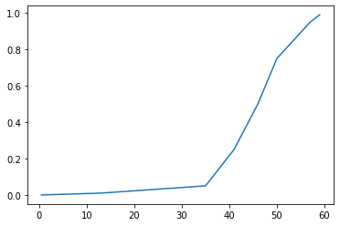
The plot above is the CDF (cumulative distribution function - easy to see because it’s non-decreasing and tops out at 1.0. Now, thet’s plot the pdf (probability density function).
[57]:
probs = -1 * pd.Series(occ_quantiles.index).diff(-1)
probs.fillna(1.0 - sum(probs[:-1]), inplace=True)
[58]:
probs
[58]:
0 0.01
1 0.04
2 0.20
3 0.25
4 0.25
5 0.20
6 0.04
7 0.01
Name: p, dtype: float64
[59]:
plt.plot(occ_quantiles, probs);
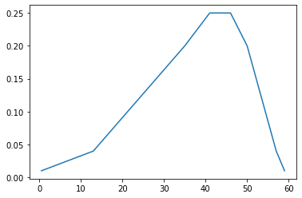
Multiple replications¶
Since our clinic opens and closes every day, it is technically known as a terminating simulation. For such simulations, we would usually run them multiple times to generate independent samples of our performance metrics (patient wait times, resource utilizations, …). We’ll see how to do this in the next version of our model, but for now, let’s focus on analyzing output from multiple replications.
I ran the model 15 times with 3 greeters, 3 registration staff, 15 vaccinators, and 3 scheduling staff. The (future version) simulation model creates a csv file with the detailed patient log values for each replications. Let’s read it in and see what it looks like.
[60]:
patient_log_df_g3r3v15s3 = pd.read_csv('output/consolidated_clinic_patient_log_base_g3r3v15s3.csv')
patient_log_df_g3r3v15s3
[60]:
| scenario | rep_num | patient_id | arrival_ts | got_greeter_ts | release_greeter_ts | got_reg_ts | release_reg_ts | got_vaccinator_ts | release_vaccinator_ts | got_scheduler_ts | release_scheduler_ts | exit_system_ts | wait_for_greeter | wait_for_reg | wait_for_vaccinator | vaccination_time | wait_for_scheduler | post_vacc_time | time_in_system | |
|---|---|---|---|---|---|---|---|---|---|---|---|---|---|---|---|---|---|---|---|---|
| 0 | base_g3r3v15s3 | 1 | 2 | 0.288373 | 0.288373 | 0.565944 | 0.565944 | 1.484153 | 1.484153 | 5.558706 | NaN | NaN | 20.912878 | 0.000000 | 0.000000 | 0.0 | 4.074553 | NaN | 15.354172 | 20.624505 |
| 1 | base_g3r3v15s3 | 1 | 10 | 1.648435 | 1.648435 | 1.911957 | 2.875854 | 2.962633 | 2.962633 | 6.442866 | 6.682268 | 7.498553 | 21.776323 | 0.000000 | 0.963898 | 0.0 | 3.480233 | 0.239402 | 15.333457 | 20.127888 |
| 2 | base_g3r3v15s3 | 1 | 1 | 0.259164 | 0.259164 | 0.434629 | 0.434629 | 1.139493 | 1.139493 | 6.272724 | 6.272724 | 7.384837 | 22.300752 | 0.000000 | 0.000000 | 0.0 | 5.133232 | 0.000000 | 16.028028 | 22.041588 |
| 3 | base_g3r3v15s3 | 1 | 8 | 0.911402 | 1.012081 | 1.326589 | 2.630813 | 2.865248 | 2.865248 | 7.314367 | NaN | NaN | 22.533807 | 0.100679 | 1.304224 | 0.0 | 4.449119 | NaN | 15.219440 | 21.622405 |
| 4 | base_g3r3v15s3 | 1 | 3 | 0.410287 | 0.410287 | 0.754393 | 0.754393 | 2.630813 | 2.630813 | 5.938723 | NaN | NaN | 22.660381 | 0.000000 | 0.000000 | 0.0 | 3.307911 | NaN | 16.721658 | 22.250094 |
| ... | ... | ... | ... | ... | ... | ... | ... | ... | ... | ... | ... | ... | ... | ... | ... | ... | ... | ... | ... | ... |
| 27185 | base_g3r3v15s3 | 15 | 1847 | 599.399426 | 599.399426 | 599.618444 | 634.475270 | 634.659081 | 634.659081 | 638.936172 | NaN | NaN | 654.141097 | 0.000000 | 34.856825 | 0.0 | 4.277091 | NaN | 15.204925 | 54.741671 |
| 27186 | base_g3r3v15s3 | 15 | 1844 | 598.380409 | 598.380409 | 598.606217 | 633.802787 | 634.475270 | 634.475270 | 638.795936 | 638.795936 | 639.789003 | 654.275778 | 0.000000 | 35.196570 | 0.0 | 4.320666 | 0.000000 | 15.479842 | 55.895368 |
| 27187 | base_g3r3v15s3 | 15 | 1843 | 597.621430 | 597.621430 | 597.915765 | 633.279810 | 634.626771 | 634.626771 | 639.019330 | 639.019330 | 640.148593 | 655.157989 | 0.000000 | 35.364045 | 0.0 | 4.392559 | 0.000000 | 16.138660 | 57.536560 |
| 27188 | base_g3r3v15s3 | 15 | 1848 | 600.484701 | 600.484701 | 600.750725 | 634.626771 | 634.874335 | 634.874335 | 638.913909 | 638.913909 | 639.805500 | 655.887105 | 0.000000 | 33.876045 | 0.0 | 4.039574 | 0.000000 | 16.973196 | 55.402404 |
| 27189 | base_g3r3v15s3 | 15 | 1846 | 598.721551 | 598.721551 | 599.031844 | 634.368403 | 634.874904 | 634.874904 | 638.911883 | NaN | NaN | 655.966865 | 0.000000 | 35.336559 | 0.0 | 4.036979 | NaN | 17.054982 | 57.245314 |
27190 rows × 20 columns
Now we can group by rep_num and use the pandas describe function on any column we’d like. Let’s look at time_in_system.
[61]:
stats_time_in_system = patient_log_df_g3r3v15s3.groupby(['rep_num'])['time_in_system'].describe()
stats_time_in_system
[61]:
| count | mean | std | min | 25% | 50% | 75% | max | |
|---|---|---|---|---|---|---|---|---|
| rep_num | ||||||||
| 1 | 1929.0 | 49.043118 | 14.893610 | 19.698536 | 35.984470 | 52.857447 | 62.228987 | 75.488876 |
| 2 | 1910.0 | 33.721613 | 7.007718 | 19.023047 | 28.275423 | 32.737625 | 38.922824 | 55.494797 |
| 3 | 1799.0 | 41.316540 | 10.008834 | 19.027169 | 32.943178 | 44.705651 | 49.662110 | 61.666545 |
| 4 | 1794.0 | 31.740397 | 6.273753 | 19.177982 | 27.359455 | 30.976362 | 35.906316 | 49.279793 |
| 5 | 1809.0 | 28.626362 | 4.820031 | 18.864741 | 24.910361 | 28.060628 | 32.681249 | 43.897147 |
| 6 | 1832.0 | 35.945118 | 11.389806 | 18.999475 | 26.848952 | 32.167756 | 44.050051 | 65.553491 |
| 7 | 1785.0 | 48.813774 | 9.715461 | 20.629835 | 45.179456 | 49.815001 | 55.317576 | 68.564213 |
| 8 | 1745.0 | 24.486740 | 2.909481 | 18.562927 | 22.258011 | 24.092286 | 26.317948 | 37.303865 |
| 9 | 1777.0 | 28.229592 | 4.391210 | 18.790706 | 24.555932 | 28.275703 | 31.887550 | 39.611643 |
| 10 | 1769.0 | 40.240274 | 9.262980 | 18.601473 | 33.981803 | 43.122620 | 47.607609 | 55.280367 |
| 11 | 1847.0 | 38.460422 | 11.041479 | 19.112033 | 31.152717 | 35.161337 | 42.050061 | 67.575319 |
| 12 | 1815.0 | 35.208928 | 6.986184 | 19.141572 | 30.686056 | 35.574528 | 39.527698 | 52.652016 |
| 13 | 1744.0 | 32.137750 | 8.443889 | 18.197370 | 24.302848 | 30.557531 | 39.680532 | 52.206389 |
| 14 | 1787.0 | 31.339861 | 6.083747 | 19.112139 | 25.641470 | 32.302248 | 36.275603 | 45.717248 |
| 15 | 1848.0 | 43.752521 | 12.150070 | 19.216871 | 30.438505 | 49.376915 | 53.491648 | 62.609229 |
Usually when doing simulation output analysis of terminating simulations, we want to give some sense of our uncertainty about summary statistics such as those in the table above. We do this through confidence intervals (CI)]. In order to compute an approximate 95% CI on the mean time in system, we compute the mean (let’s call it \(\bar{Y}\)) and standard deviation (let’s call it \(S\)) of the mean column in the above output of describe. Then our CI is:
where \(n\) is the number of simulation replications and the \(1.96\) is the 97.5th percentile of the standard normal distribution (since we are building a 95% CI, we want 2.5% outside of the upper and lower limits). You might recall from your basic statistics course that \(\frac{S}{\sqrt{n}}\) is called the standard error and that \(1.96 \frac{S}{\sqrt{n}}\) is called the half-width of the CI. What’s nice about doing simulation is that we can make the half-width narrower by simply running more replications (and getting a more precise estimate of our mean performance measure).
[62]:
n = stats_time_in_system['mean'].count()
n
[62]:
15
[63]:
Y_bar = stats_time_in_system['mean'].mean()
Y_bar
[63]:
36.20420066324916
[64]:
S = stats_time_in_system['mean'].std()
S
[64]:
7.33871302040903
… and here’s the confidence interval on the mean time in system.
[65]:
print(f"({Y_bar - 1.96 * S / math.sqrt(n):.3f}, {Y_bar + 1.96 * S / math.sqrt(n):.3f}) minutes")
(32.490, 39.918) minutes
Remember, a CI on the mean of some performance measure is NOT the same as the percentiles of the distribution of the individual time in system values. For example, here’s a histogram of all of the time_in_system values across all the replications.
[66]:
plt.hist(patient_log_df_g3r3v15s3['time_in_system']);
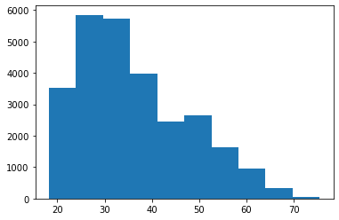
Possible improvements¶
Now that we have a rough first model working, let’s think about some possible improvements. There are many as we’ve taken numerous shortcuts to get this model working. We definitely want to make it easier to experiment with different scenarios involving capacity levels and patient volume. A few potential improvements include:
Specifying the global sim inputs through a command line interface (CLI)
Getting rid of hard coded processing time distributions
Automating the post-processing of simulation outputs to create summary statistics.
There are many more possible improvements. For example, it would be nice to model arrivals in which a batch of patients is given an appointment time every, say, 10 minutes.
In the next notebook, we’ll tackle some of these improvements.
More SimPy resources¶
I suggest taking a look at some the following resources to get a sense of different ways of building SimPy models.
From the SimPy docs:¶
SimPy in 10 Minutes - the “Hello, world” of SimPy
Example models from the SimPy documentation - demonstrates various features of SimPy through relatively simple models
From Real Python:¶
SimPy: Simulating Real-World Processes With Python - a very good introductory tutorial
From a healthcare modeling workshop¶
These are long but quite good. The modeling approach they use is similar to what I cover in our session. * Session 5B: Building a DES model with SimPy - this is a YouTube vid from a healthcare modeling workshop and they go through models very similar to this clinic model. They use a non-OO approach but many things are the same. * Session 5C: Object-oriented SimPy - follow up to the video above.
From a few of my blog posts:¶
Getting started with SimPy for patient flow modeling - one of my blog posts on SimPy modeling using a process focused approach
An object oriented SimPy patient flow simulation model - one of my blog posts on SimPy modeling using an object oriented approach
Some computer network based examples:¶
Basic Network Simulations and Beyond in Python - good examples of network simulation models, building components to extend SimPy components. I found this site very helpful when I was building the patient flow models in the above two blog posts.